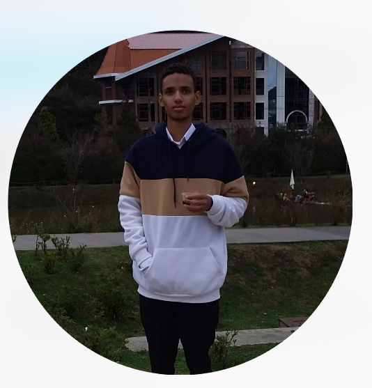

Quem é Jacaré?
Para o cego, é a luz. Para o faminto, é o pão. Para o sedento, é a fonte de água. Para o morto, é a vida. Para o enfermo, é a cura. Para o prisioneiro, é a liberdade. Para o solitário, é o companheiro. Para o viajante, é o caminho. Para mim, é tudo.
Vamos falar sobre o nosso divo Luís Eduardo mais abaixo:

Luís Eduardo
Idade: 16
Signo: Peixes
Altura: 1,92
Comida Favorita: Laranja
Trabalha: Não
Cor Favorita: Verde